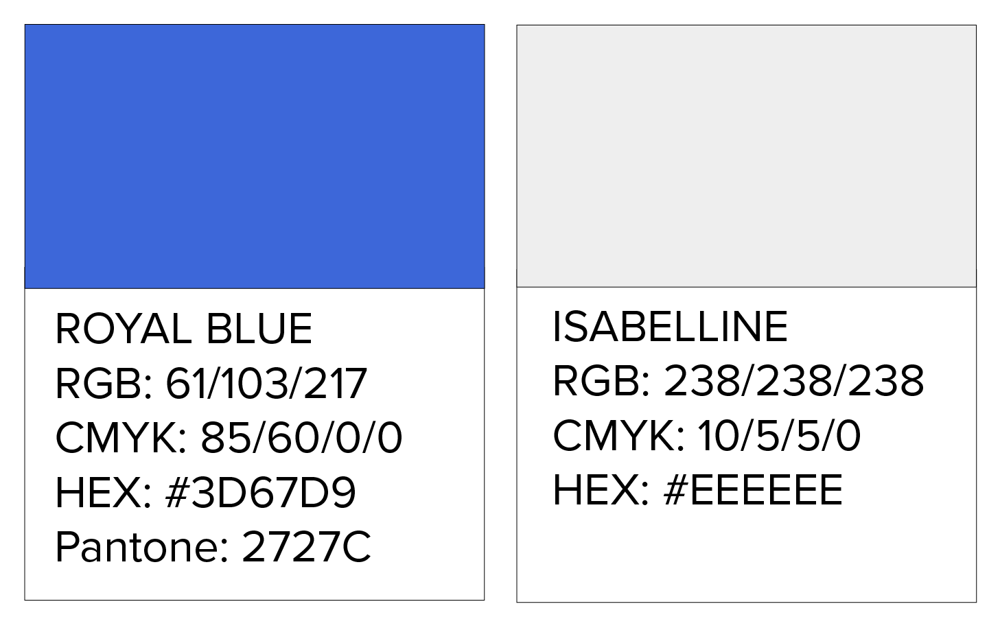
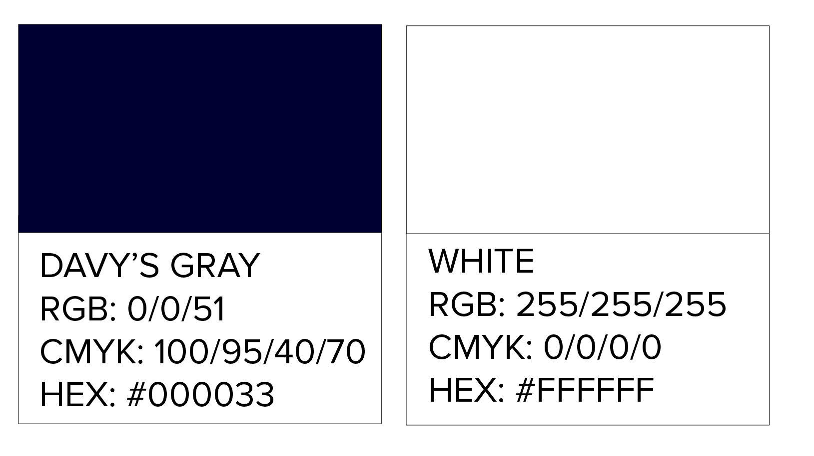
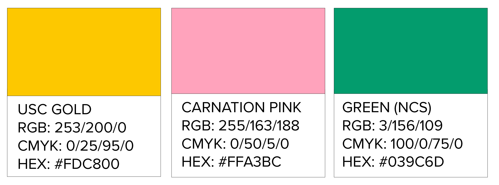

primaire kleuren
De basiskleur van Buda is blauw. Blauw straalt veiligheid en vertrouwen uit. Dit sluit goed aan bij de gekozen waarden en het open huis waar het kunstencentrum voor wil staan. Als ondersteunende kleuren voor de typografie en de achtergrond, gingen we voor een lichtgrijze kleur en een hele donkerblauwe kleur die er bijna zwart uitziet. Daarnaast gebruiken we wit als achtergrondkleur en voor sommige typografie, als de lichtgrijze kleur een beetje te grauw uitvalt. Het lichtgrijs geldt ook als diapositief alternatief voor blauw.

secundaire kleuren
Om het onderscheid te behouden tussen de drie takken van Buda, kozen we drie ‘leuke’, frisse kleuren die het geheel dynamischer maken en het verschil tussen de onderdelen verduidelijkt. We gingen voor geel, roze en groen. Samen komen we tot een palet dat er kleurrijk en tof uitziet, maar ook niet té kleurrijk. De hoofdkleuren zijn op zich redelijk eenvoudig, maar in combinatie met de secundaire kleuren, stralen ze levendigheid uit. De 3 secundaire kleuren worden in print telkens gecombineerd met alle hoofdkleuren. In principe worden de secundaire kleuren niet echt met elkaar gecombineerd.
